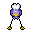
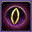
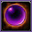
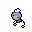

Pokédex / #425
Drifloon #425
GhostFlying
Because of the way it floats aimlessly, an old folktale calls it a “Signpost for Wandering Spirits.”
Generation 4 · Sinnoh

Stats
| Attack | 50 | |
|---|---|---|
| Defense | 34 | |
| Sp. Atk | 60 | |
| Sp. Def | 44 |
In the wild
| Wild level | 20–30 |
|---|---|
| HP | 90 |
| Experience | 5 |
| Egg groups | Amorphous |
Evolution
- Evolves into Drifblim at level 28.
Moves
| Level | Move | Type | Category | Power | Energy | Cooldown | Effect | |
|---|---|---|---|---|---|---|---|---|
| 1 | Tackle | Normal | Physical | 15 | 15 | 1s | Tackle is one of the most common and basic moves a Pokemon learns. It deals damage with no additional effects. | |
| 1 | Constrict | Normal | Physical | 10 | 50 | 15s | Constrict deals damage and has a 10% chance of lowering the target's Speed by one stage. | |
| 4 | Astonish | Ghost | Physical | 30 | 30 | 5s | The user attacks the target while shouting in a startling fashion. This may also make the target flinch. | |
| 8 | Gust | Flying | Special | 40 | 40 | 9s | Gust deals damage and has no secondary effect. | |
| 13 | Focus Energy | Normal | Status | – | 70 | 60s | Increases Critical-Hit ratio by 50%. | |
| 16 | Payback | – | Physical | – | 100 | 90s | Any move is reflected back to the attacker. | |
| 20 | Ominous Wind | Ghost | Special | 60 | 100 | 22s | Ominous Wind inflicts damage and has a 10% chance of raising all of the user's stats by one stage. | |
| 25 | Stockpile | Normal | Status | – | 90 | 10s | Raises the user's Defense and Special Defense by one stage and charges up power for use with companion moves Spit Up or Swallow. | |
| 27 |  | Hex | Ghost | Special | 65 | 90 | 12s | Hex inflicts damage, but if the target has a status ailment (i.e. is burned, poisoned, paralyzed, asleep or frozen) it will double in power. |
| 32 | Swallow | Normal | Status | – | 90 | 120s | Swallow recovers a varying amount of HP depending on how many times the user has used Stockpile. It recovers 25%, 50% or 100% of the user's maximum HP if the user stockpiled one, two or three times respectively. | |
| 32 | Spit Up | Normal | Special | 100 | 150 | 30s | Spit Up deals varying damage depending on how many times the user used Stockpile. The base power is 100, 200 or 300 if the user stockpiled one, two or three times respectively. | |
| 36 |  | Shadow Ball | Ghost | Special | 80 | 80 | 12s | Shadow Ball deals damage and has a 20% chance of lowering the target's Special Defense by one stage. |
| 40 | Amnesia | Psychic | Status | – | 75 | 60s | Amnesia raises the user's Special Defense by two stages. | |
| 50 | Explosion | Normal | Physical | 250 | 100 | 180s | Explosion deals high damage, but causes the user to faint. |
Field abilities
CutFlash
Special abilities
None
Egg moves
Body SlamClear SmogDefogDestiny BondDisableHazeHypnosisMementoTailwindWeather Ball
Technical machines
Calm MindDouble TeamDream EaterExplosionFacadeHidden PowerProtectPsychicRain DanceRestSecret PowerShadow BallShock WaveSubstituteThunderThunder WaveThunderboltToxic
Drops
| Item | Amount | Chance | |
|---|---|---|---|
| reaper cloth | 1 | 8.89% | |
| essence of a bad dream | 1 | 8% | |
 | drifloon doll | 1 | 0.1% |
| Toxic Plate | 1 | 0.001% | |
| Spooky Plate | 1 | 0.001% |